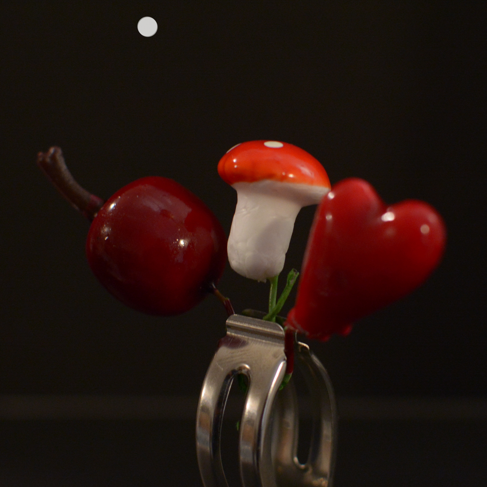
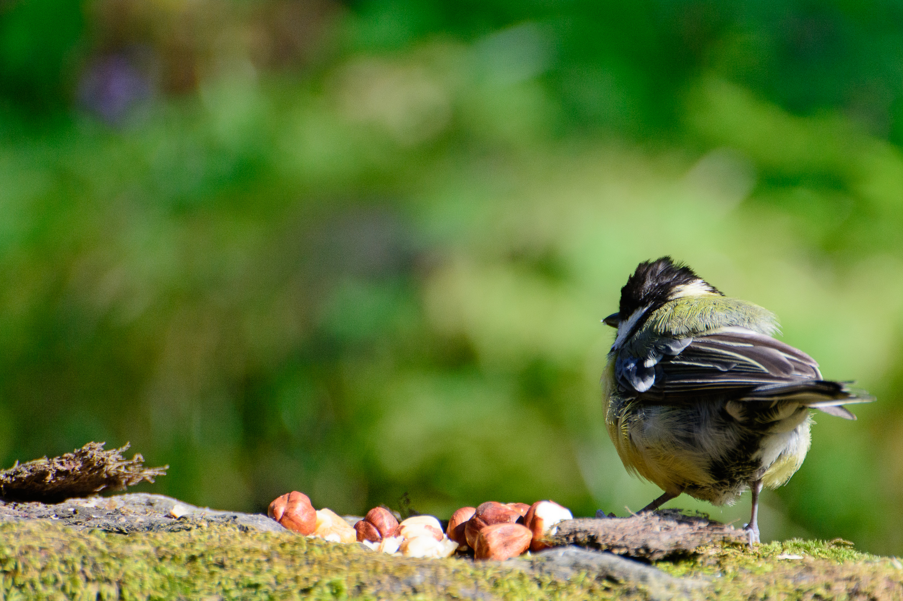

photo by the wall
photographed a wooddoll with black bg, changed the bacground with a brick-pattern
garden life sign4.
Done in Photoshop mobile phone down from top level. Text was done in photoshop
DSC_0078BW.
photograph with backlight pocketlight modifide in photoshot
pray
two photolayers with a soft cut in photoshop
hand where doubled and a Laserpointer run over te fingers/hand. touched up in photoshop

I created this figure from Christmas decorations and a metal clothespin. "2021 come get a hug" this is a commemorative photo after the corvid epidemic. snapped from my camera.
I wanted to try phoshop 3d engine to use some of my 3d creation in photos.
describe photo one word?? bird history behind photo?? This was a photoclub-site.. where anyone could photograph.. titts were coming

This was a photoclub-site.. where anyone could photograph.. titts were coming